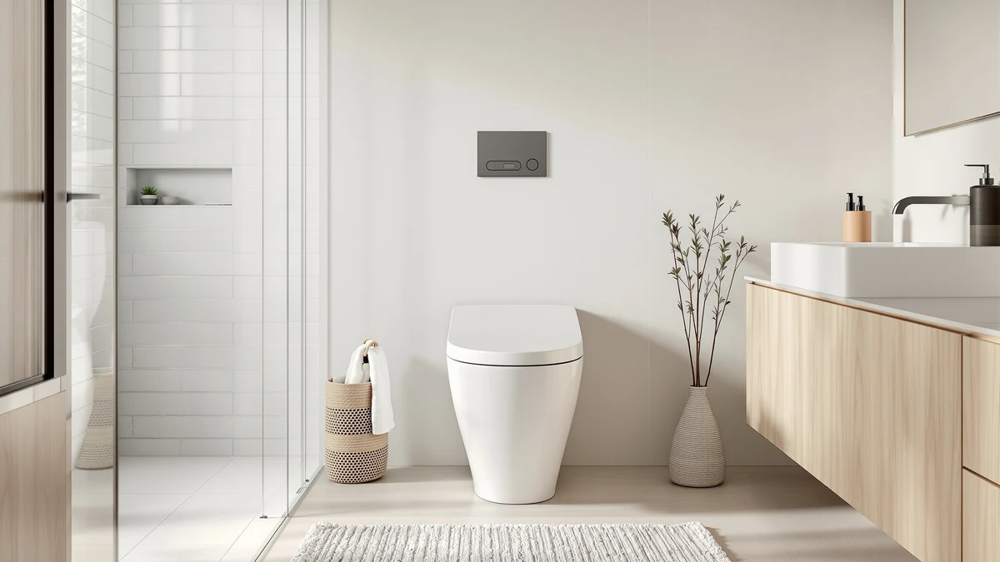

One Piece vs Two Piece Toilets (2026): Which Should You Buy?
Prices and picks verified as of August 2026. Independent, reader-supported reviews.


Things to Know Before You Buy
- Cleaning is the biggest daily difference. A one-piece is a single seamless casting with no tank-to-bowl crevice to trap grime, so it wipes down in seconds. A two-piece hides dust and mineral scale in the seam and around the mounting bolts.
- Weight decides your install. One-piece units run roughly 80–120 lbs in a single lump — realistically a two-person carry. A two-piece splits into a lighter tank and bowl you can move one at a time, which matters for stairs or a solo install.
- Price favors two-piece. Two-piece models are generally cheaper and come in far more heights, shapes, and flush options. One-piece models cost more but reward you with a sleeker, lower profile.
- Repairs work differently. On a two-piece you can replace just the tank or just the bowl. Crack a one-piece and you replace the whole unit.
- Rough-in applies to both. Measure from the finished wall to the center of the floor bolts — usually 12 inches. Both styles come in elongated or round bowls and standard or comfort height.
Standing in the toilet aisle, the choice usually comes down to one question that has nothing to do with flushing: do you want the sleek, wipe-clean look of a one-piece, or the lower price and easier handling of a two-piece? Both flush the same water, meet the same 1.28-gallon standards, and come in the same bowl shapes and heights. The real trade-offs are in cleaning, weight, cost, and how you replace them down the road.
We have installed, cleaned, and lived with both styles, and neither is universally "better." A one-piece rewards you every time you clean the bathroom and looks more modern; a two-piece saves money up front and is far easier to carry up a flight of stairs by yourself. Below we break down exactly where each one wins so you can match the toilet to your bathroom, your budget, and your back.
Quick Answer
Choose a one-piece toilet if easy cleaning and a sleek, low-profile look matter to you and your budget has room — there is no tank-to-bowl seam to leak or trap grime. Choose a two-piece toilet if you want the lowest price, the widest selection of heights and styles, or an easier solo installation, since the tank and bowl carry separately. Both come in elongated or round bowls, standard or comfort height, and single or dual flush.
What is One Piece?
A one-piece toilet is molded as a single, seamless unit — the tank and bowl are fired together as one continuous piece of vitreous china. Because there is no joint where the tank meets the bowl, there is no rubber gasket or set of bolts that can loosen and weep over the years. That sealed design is also why one-piece toilets look so clean: the silhouette flows from tank to bowl in one unbroken curve, usually sitting lower and more compact than a comparable two-piece.
The headline advantage shows up every time you clean. There is no crevice behind the tank and no bolt caps to scrub around — a single wipe covers the whole exterior. The trade-offs are weight and cost. A one-piece is a solid 80 to 120 pounds in one awkward mass, which makes it a genuine two-person lift, and it typically costs more than an equivalent two-piece. And because it is one casting, a serious crack means replacing the entire fixture rather than a single part.
What is Two Piece Toilets?
A two-piece toilet is the traditional design most homes already have: a separate tank that bolts down onto a separate bowl, sealed by a rubber gasket. The two parts ship and install independently, which is exactly where its strengths come from. Each piece is lighter and easier to maneuver, so one person can carry the bowl in, set it, then add the tank — a real advantage on stairs or in tight spaces. Two-piece models also dominate on choice: you will find more heights, bowl shapes, and flush configurations, usually at a lower price.
The compromise is that seam. The tank-to-bowl connection and its mounting bolts can loosen or degrade over years of use and eventually seep, and the gap between tank and bowl collects dust and mineral scale that is fiddly to clean. None of this is a dealbreaker — the gasket is a cheap, replaceable part — but it is honest maintenance a one-piece simply does not have.
Head-to-Head: Build Quality & Durability
Both styles are made from the same durable vitreous china, so raw material quality is a wash. The difference is failure points. A one-piece has fewer of them: with no tank-to-bowl gasket or bolts, there is simply nothing at the seam to loosen, corrode, or leak. That sealed construction is the single biggest durability argument in its favor.
A two-piece introduces that connection as a potential weak spot. Over many years the gasket can harden and the bolts can loosen, leading to a slow seep at the base of the tank. The upside is repairability: if the tank cracks, you swap the tank; if the bowl chips, you swap the bowl. A one-piece gives you nothing to loosen, but if it ever cracks structurally, the whole unit is done. Call it even — one-piece for fewer leak points, two-piece for cheaper, part-by-part repairs.
Head-to-Head: Price & Value
This is the clearest win for two-piece toilets. Dollar for dollar, a two-piece almost always costs less than a comparable one-piece, and the budget end of the market is dominated by two-piece designs. If price is the deciding factor, two-piece is the pragmatic answer.
One-piece toilets carry a premium for their seamless molding and sleeker profile — the picks below run from about $240 to $360, which is solid mid-range territory rather than bargain-bin. You are paying for looks and easier cleaning, not better flushing. Whether that premium is worth it depends on how much you value a modern silhouette and a wipe-clean exterior versus keeping the most cash in your pocket.
Head-to-Head: Use Experience
Day to day, cleaning is where you feel the difference. A one-piece wipes down in one pass with no seam or bolt caps to work around, which is a small joy every week and a real edge in a busy household bathroom. A two-piece asks a little more: you will chase dust and scale in the tank-to-bowl gap and around the bolts.
Installation flips the advantage. A two-piece comes apart, so a single person can carry the bowl and tank separately and set them without help — the smart choice for an upstairs bathroom or a solo weekend project. A one-piece arrives as one 80-to-120-pound block that really wants two sets of hands. Flushing performance, seat comfort, and water use come down to the specific model, not the one-versus-two-piece format, so judge those spec by spec.
When to Choose One Piece
Pick a one-piece toilet if you want the easiest possible cleanup and a modern, low-profile look, and your budget has a little room. It is the right call for anyone who values a seamless, wipe-clean exterior, worries about long-term leaks at the tank seam, or simply wants the bathroom to look more upscale. It also suits smaller bathrooms, where the compact, lower silhouette reads as less bulky. Just line up a second person for delivery and install — that single heavy unit is not a solo job.
When to Choose Two Piece Toilets
Pick a two-piece toilet if the lowest price or the widest selection matters most, or if you are installing it yourself. Splitting into a lighter tank and bowl makes it far easier to carry up stairs and set solo, and the huge range of heights, shapes, and flush options means you can dial in an exact fit. It is also the friendlier choice for the long haul if you would rather replace a single cracked part than the whole fixture. The trade-off you accept is a seam to clean and, eventually, a gasket to watch.
Our Top Picks
If the comparison points you toward a one-piece, these are the three we recommend. Each is a seamless, easy-to-clean unit at a different price point — from a value pick to a premium matte finish — so you can match the look and budget without giving up the wipe-clean advantage.

Editor’s Pick
WOODBRIDGEE One Piece Toilet with
Our overall one-piece champion. The WOODBRIDGE pairs a genuinely seamless body with a quiet soft-close seat and a strong, clean-looking flush, all at a fair mid-range price — the one we would put in most bathrooms.
$318.93
Check Price on Amazon
Best Value
HOROW T0338WM Elongated One Piece
The premium step-up. HOROW's matte-white finish looks unmistakably modern and resists fingerprints and water spots, making it the pick if you want the one-piece look to be the design statement of the room.
$359.00
Check Price on Amazon
Premium Choice
DeerValley Elongated One-Piece Toilet with
The value winner. DeerValley delivers the core one-piece benefits — seamless body, easy cleaning, elongated comfort bowl — at the lowest price of our three, proving you do not have to overspend to ditch the seam.
$240.80
Check Price on AmazonFrequently Asked Questions
Is a one-piece or two-piece toilet better?
Neither is universally better — it depends on your priorities. A one-piece is easier to clean, looks sleeker, and has no tank seam to leak, but it costs more and is heavy to install. A two-piece is cheaper, lighter to carry in pieces, and offers more style choices, but the tank-to-bowl seam traps grime and can eventually leak. Choose one-piece for cleaning and looks, two-piece for price and easier solo installation.
Are one-piece toilets harder to install?
They are heavier to handle but not more complex to plumb. A one-piece weighs roughly 80 to 120 pounds in a single unit, so it is realistically a two-person lift. A two-piece splits into a lighter tank and bowl you can carry and set one at a time, which makes it much easier for a single person or for an upstairs bathroom. The bolt-down and water hookup steps are similar for both.
Do two-piece toilets leak more than one-piece toilets?
They have more places that can leak. A two-piece relies on a rubber gasket and bolts where the tank meets the bowl, and over many years those can loosen or degrade and seep. A one-piece is molded as a single unit with no seam, so that particular leak point does not exist. That said, the gasket on a two-piece is a cheap, replaceable part, and a well-maintained two-piece can last decades without issue.
Does rough-in size matter for both types?
Yes. Rough-in is the distance from the finished wall to the center of the floor drain bolts, and it applies to one-piece and two-piece toilets alike. Most homes use a 12-inch rough-in, but 10-inch and 14-inch exist. Measure before you buy either style, because a mismatched rough-in means the toilet will not sit flush against the wall.
Final Verdict
There is no wrong answer here, only the right answer for your bathroom. Go one-piece if you want the easiest cleaning, the sleekest look, and no seam to worry about — and you have a helper for install day and a bit more budget. Go two-piece if you want to spend the least, need the widest choice of heights and styles, or are carrying it upstairs and setting it yourself. Both flush just as well and come in the same bowl shapes and heights, so decide on cleaning, weight, and price — then measure your rough-in before you buy. If you land on one-piece, the WOODBRIDGE above is where we would start.